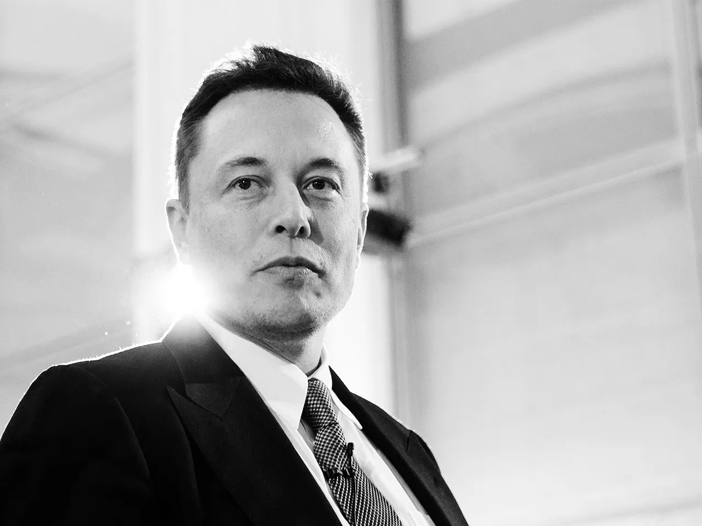

Elon Musk
Top richest man in the world

Elon Musk is the founder and CEO of SpaceX, Tesla and Neuralink. Moreover, those are only small pieces of his grand-scale puzzle that leads to a better future and the colonization of Mars.
Here is a timeline of Elon Musk's life events:
He is one of the people that constantly shape the 21st century
If you want to read more about this remarkable human being, you can check the Wikipedia page